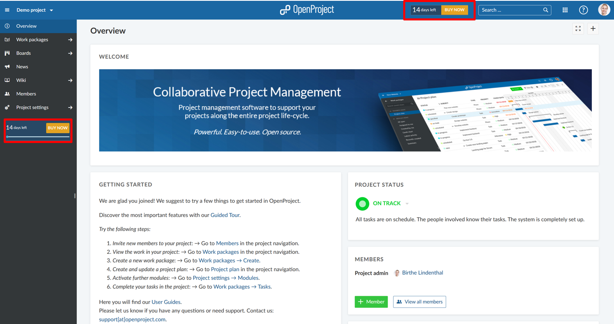
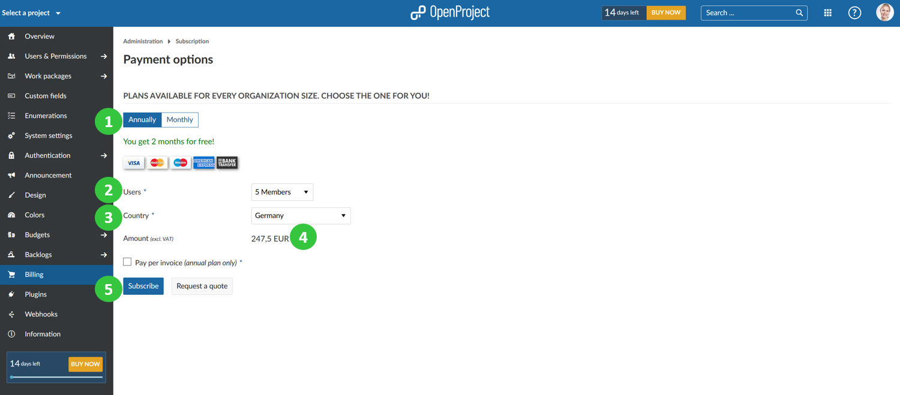

If you would like to request a quote for OpenProject Enterprise cloud you can do so in your trial instance. Alternatively, you can refer to our website for the Enterprise cloud edition pricing.
To create a quote please, click on the BUY NOW teaser, e.g. in the application header or or in the project menu.

You will be directed to -> Administration -> Billing.
(1) First, choose if you want to subscribe to an annual or monthly plan.
(2) Select the amount of users from the drop-down list. The number of users can only be selected in steps of five, the minimum is five users.
(3) Select your country from the drop-down list.
(4) The total amount (excluding VAT) will be displayed.
(5) Click on Request a quote.

You will then be asked to provide your address details. After populating the respective fields please click on Request a quote.
After that you will receive an email with the quote. The email includes a link to accept the quote. Your subscription will be updated once you accept the quote.